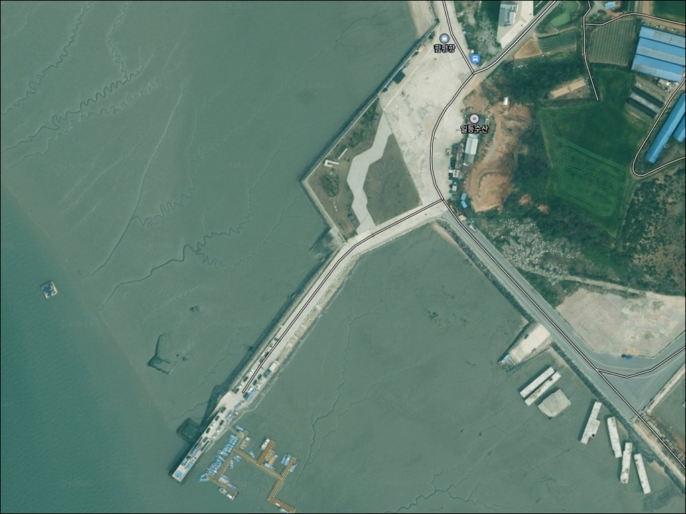
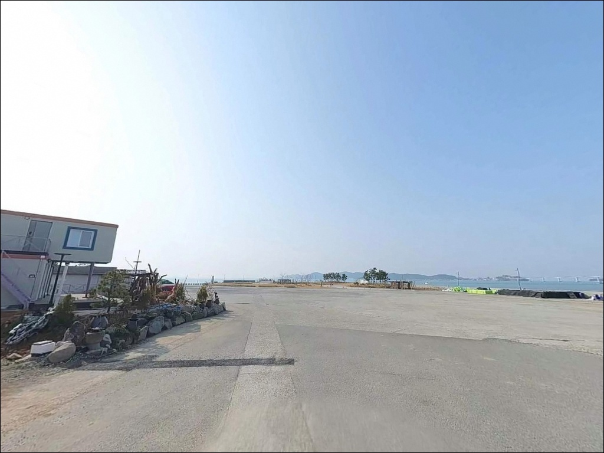
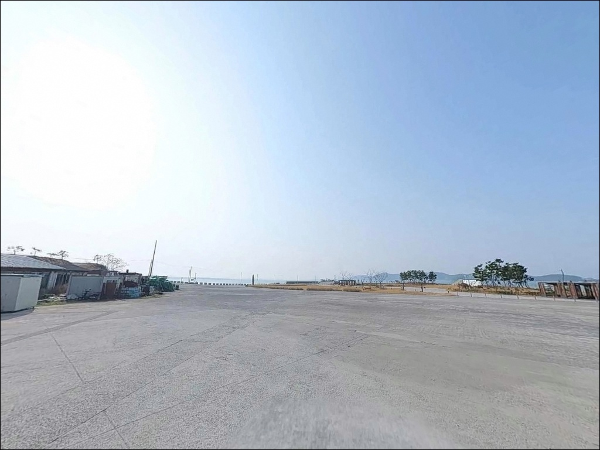
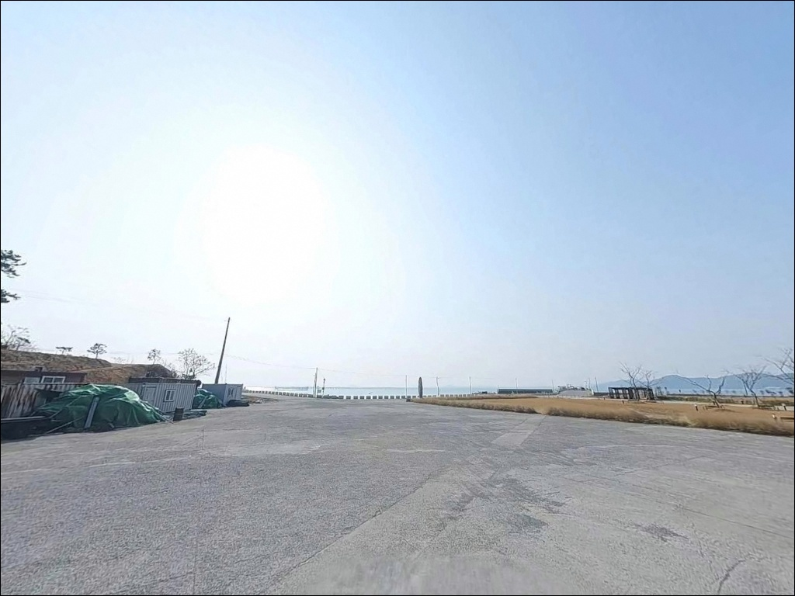
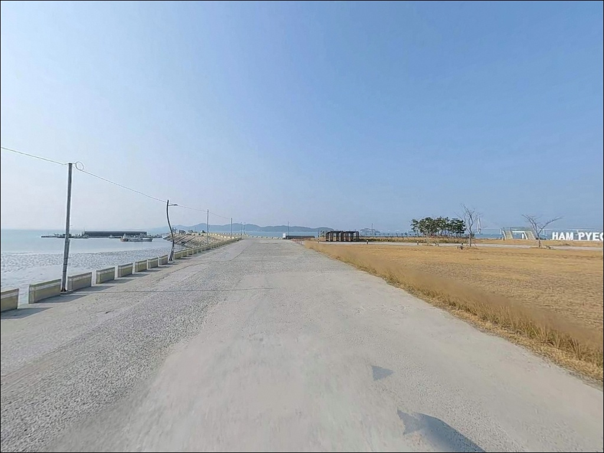
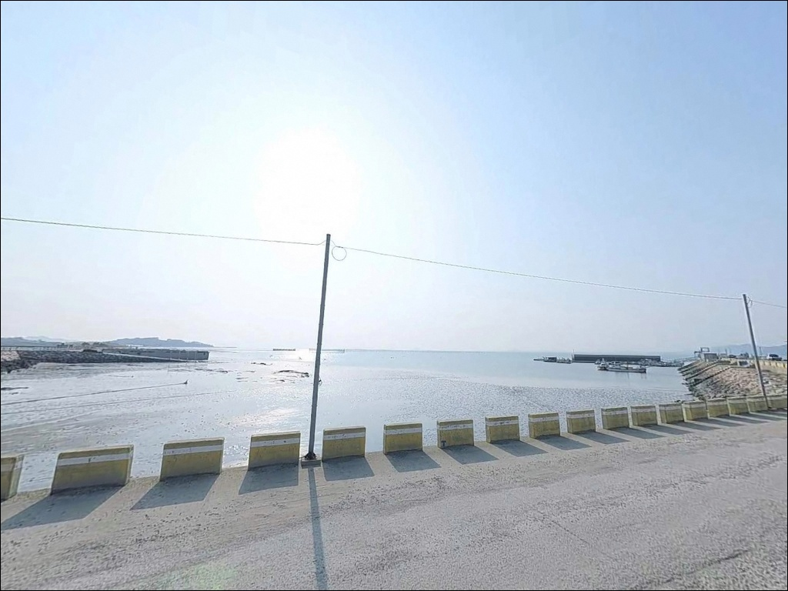
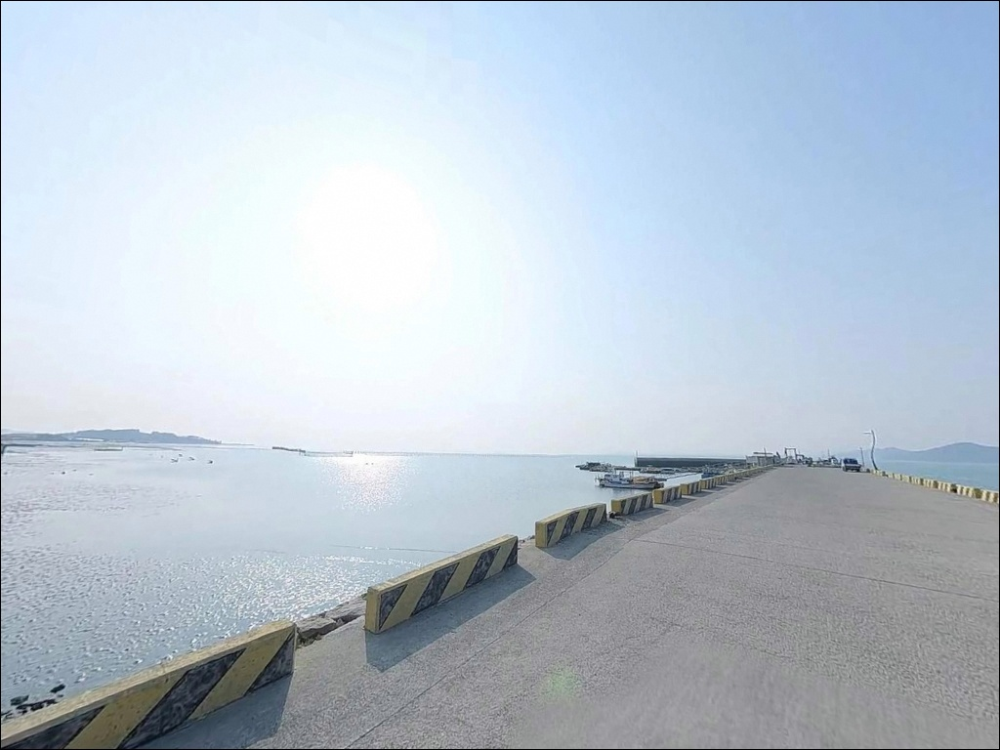
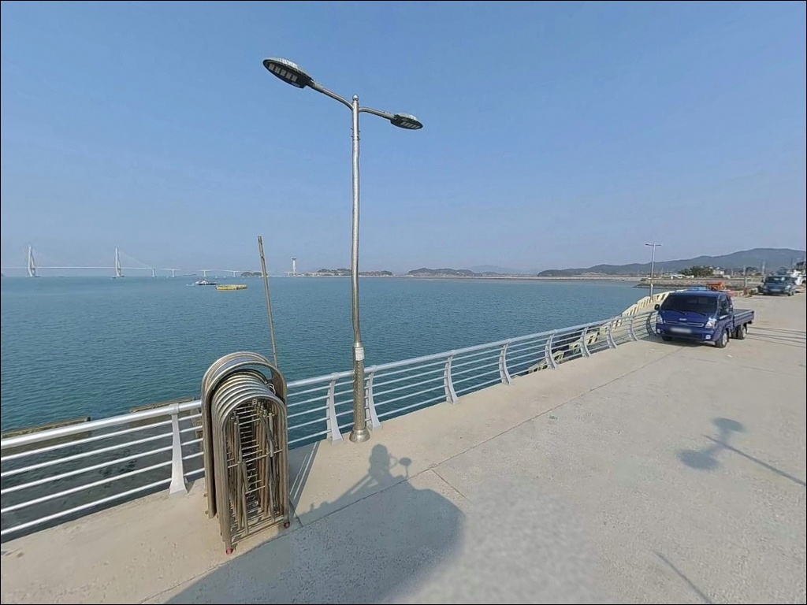
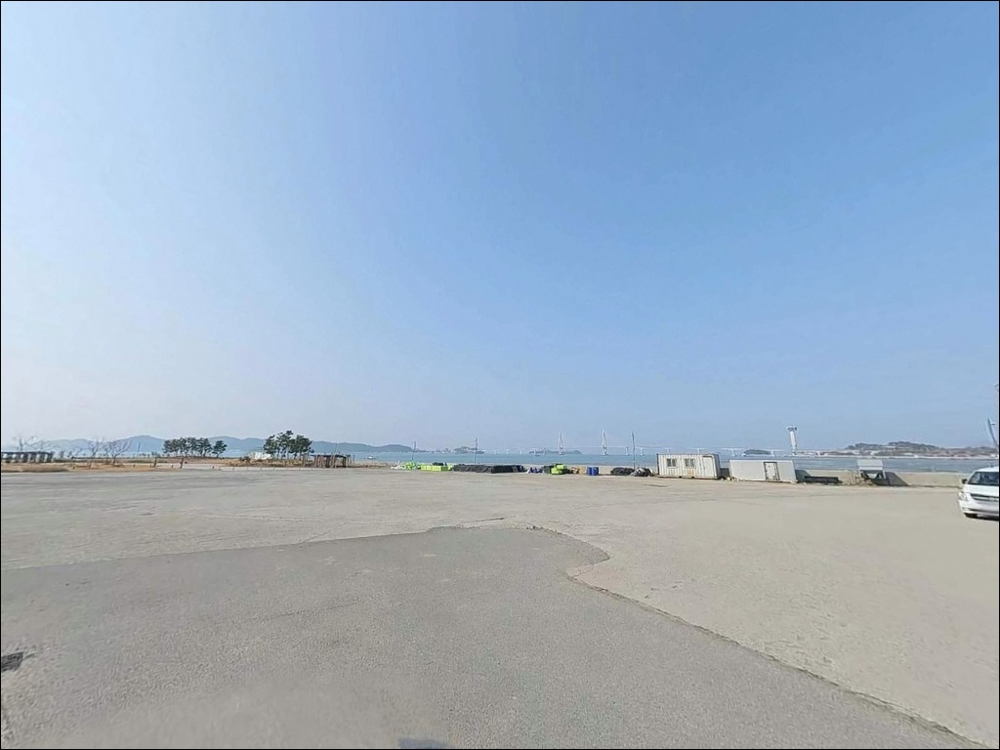

함평항, 전남 함평군 자연의 여백을 느낄 수 있는 차박, 낚시 명소
이 페이지에는 광고(제휴 링크 포함)가 있으며, 광고 링크를 통해 구매하면 운영자가 판매 수익 또는 수수료를 받을 수 있습니다. 포인트 사진: 카카오맵 스카이뷰·로드뷰. 이 페이지의 지도·사진 이미지는 카카오맵의 실제 서비스 이미지와 다를 수 있습니다.


함평항
전남 함평군 손불면 학산리 산 70-30
서해 함평만 안쪽에 위치한 함평항은
간조 시 수심이 크게 낮아지는 내만형 구조입니다.
물때를 계산하지 않고 간조 전후에 도착하면
방파제 끝단도 바닥이 드러나는 수준까지 수심이 떨어져
어떤 채비를 써도 운신이 어려워집니다.
이 구조를 모르고 간다면 절반의 낚시 시간을
물을 기다리며 소비하게 됩니다.
이 글은 함평항의 진입 환경, 낚시 여건,
차박 조건에 집중합니다.
조황 단정이나 특정 어종 보장은
이 글의 범위에 포함되지 않습니다.

1. 진입 동선과 주차 여건
함평항은 2019년 어촌뉴딜 300사업 선정 이후
항 일대가 정비된 어촌정주어항입니다.
진입로 길이는 공식 기록상 248m 수준으로,
학산리 해안도로를 경유해 항까지 이어지는
농어촌 마을도로 형태입니다.
도로 폭이 넓지 않은 편이라
차폭이 넓거나 루프탑 장비를 탑재한 대형 차량이라면
출발 전 위성지도로 진입로 상태를 확인하고 가는 편이 안전합니다.
주차 공간은 2,700㎡ 규모의 공식 주차장이 조성되어 있습니다.
70~80대 수준의 오픈형 면적으로,
주차 자리를 두고 경쟁할 필요는 적은 편입니다.
물양장 인근까지 차량 접근이 가능하여
장비를 내리고 낚시 자리로 이동하는 동선이
비교적 편리한 구조입니다.
회차 공간도 선착장 주변과 주차장 구역을 활용하면
소형~중형 차량 기준으로 어렵지 않습니다.
대형 SUV나 캠핑 트레일러를 연결한 차량이라면
항 입구 부근 여유 공간을 먼저 확인하는 것이
진입 후 불필요한 후진을 줄이는 방법입니다.

2. 차박 환경과 야간 체류 여건
함평항은 함평만 안쪽 소규모 어촌 마을에 자리하고 있어
야간에는 차량 통행이 드물고
한적한 분위기가 유지되는 편입니다.
내만 구조 특성상 외해 파도가 직접 닿지 않아
파도 소음은 크지 않은 편입니다.
항 내 복지시설과 레저시설이 설치되어 있는 구조상
야간 기본 조명은 일부 갖춰져 있습니다.
다만 방파제 외곽이나 끝단 구간은
야간에 조명이 충분하지 않을 수 있으므로
개인 헤드랜턴은 반드시 챙겨야 합니다.
서해 특성상 북서풍이 강해지면
방파제 방향에서 바람을 직접 받는 구간이 생깁니다.
차량 위치를 잡을 때 바람이 들어오는 방향을 먼저 확인하고
항 내 구조물이나 시설이 바람막이가 되는 자리를 선택하면
야간 체류의 쾌적함이 달라집니다.


3. 주변 편의시설 및 인프라 현황
함평항 반경 3km 이내에는 소형 슈퍼 1곳이 확인됩니다.
긴급한 생활용품 수급은 가능하지만,
낚시 미끼·채비·식재료 전체를
이 일대에서 해결하기는 어렵습니다.
완전 자급 체제로 출발하는 것이 현실적인 준비 방식입니다.
항 안에는 공원과 전망대가 조성되어 있습니다.
낚시 후 잠시 쉬거나
함평만 서해 조망을 즐기기에 부족하지 않은 환경입니다.
마트나 대형 편의점, 낚시 전문점이 필요하다면
함평읍 방향으로 약 10km 이동하는 것이
현실적인 대안입니다.
미끼와 채비는 출발 전에 충분히 챙기고,
응급 상황을 포함해 광역 인프라가 필요할 때는
함평읍 방향 이동 동선을 미리 파악해 두는 편이 좋습니다.

4. 물때를 모르면 낚시 시간이
반으로 줄어드는 이유
함평항 방문에서 가장 먼저 챙겨야 할 것은 물때 확인입니다.
서해 함평만은 조수간만의 차가 큰 해역으로,
간조 전후에는 수심이 너무 낮아져
방파제 끝단과 물양장 외곽 구간에서
낚시 운신이 사실상 불가능한 수준이 됩니다.
바다타임에서 손불면 기준 물때를 확인하고
들물 시작 이후 만조 전후 2시간을 기준으로
입장 시각을 맞추는 것이 기본 전략입니다.
함평항은 서해 내만형 구조 특성상
들물 이후 만조 전후 타이밍이 낚시 입장의 기본 판단 기준입니다.
기상 확인도 물때만큼 중요합니다.
서해는 북서풍이 강해지면 방파제 외항 쪽 파도가
급격히 높아질 수 있는 구조입니다.
기상청 해상예보를 당일 아침에 한 번 더 확인하고
기상 악화 징후가 있으면 내항 쪽으로 자리를 옮기거나
출조 자체를 재검토하는 것이 안전한 판단입니다.
어선이 정박하는 선착장과 내항 구역에서는
어업 활동 동선을 막지 않는 자리를 잡는 것이 기본 매너입니다.
미끼는 청갯지렁이 위주로 충분히 준비하고,
채비 손실에 대비해 여분 채비는 넉넉하게 챙기는 편이 좋습니다.

5. 지형 기반 낚시 여건 분석
함평항은 함평만 안쪽에 자리한 내만형 항으로,
외해 파도의 직접 영향에서 벗어난
안정적인 낚시 환경을 갖추고 있습니다.
공식 시설로 방파제, 물양장 4,500㎡,
부교 360m, 선착장 170m가 조성된 구조로
접근 방향에 따라 서로 다른 낚시 여건을 활용할 수 있습니다.
방파제 끝단과 선착장 외곽 수로 입구 구간은
수심 변화가 생기는 지점입니다.
들물 타이밍에 이 구간에서 조류가 살아나고
어종의 이동 흐름이 형성되는 편입니다.
반면 내항 쪽은 어선 정박 구역이 포함되어 있어
어선 동선을 피한 가장자리 구간이 낚시 자리가 됩니다.
부교 360m는 이 포인트에서 주목할 구조물입니다.
부교 아랫면과 주변 그늘에는
숨을 곳을 찾는 어종이 모이는 경향이 있어
라이트 루어 방식으로 탐색하기에 적합한 구간입니다.
야간에는 조명이 닿는 부교 주변이
먹이 활동이 활발해지는 구간이 되는 편입니다.
물양장 4,500㎡와 부교 360m를 갖춘 함평항은
원투·찌낚시·루어 방식을 동시에 운용할 수 있는
발판 조건을 갖추고 있습니다.
출조 전 최신 조황은
'함평항 낚시', '함평항 조황', '손불면 낚시'로
검색해 확인하시기 바랍니다.


6. 함평항에 어울리는 낚시 스타일
이 포인트에서 가장 기본이 되는 방식은 원투낚시입니다.
물양장 끝과 방파제 외항 방향에서
청갯지렁이 미끼로 채비를 멀리 보내
바닥층을 노리는 형태가 이 지형에 맞습니다.
들물 타이밍에 맞춰 던지는 것이 포인트이며,
망둥어·붕장어·노래미 계열의 입질을 기대해 볼 수 있습니다.
찌낚시는 내항 조류가 소통되는 구간에서 유효합니다.
숭어가 내만으로 들어오는 들물 타이밍에
릴찌 채비를 활용하는 방식이 잘 맞고,
수온이 안정되는 가을 초입에는
감성돔을 노린 찌낚시도 시도해 볼 수 있는 여건입니다.
라이트 루어는 부교 주변과 항 입구 수로 구간에 어울립니다.
소형 지그헤드 채비로 부교 아랫면과
그늘 구간을 천천히 탐색하는 방식이 이 구조와 잘 맞습니다.
야간에 조명이 닿는 부교 주변이라면
볼락이나 우럭류가 반응하는 구간이 생기는 편입니다.
9월 이후 가을 시즌에는 에깅을 병행해볼 수 있습니다.
함평만 안쪽 내만 구조는 갑오징어가 서식하기 적합한 환경을 갖추고 있어
에기를 활용한 채비가 이 포인트에서도 유효한 선택지가 됩니다.

7. 대안 포인트와 플랜 B 동선
함평항 물때 타이밍이 맞지 않거나
자리 여건이 기대에 못 미칠 때는
같은 함평만 해안선을 따라
인근 소형 방파제나 어항으로 이동하는 방식이 현실적입니다.
함평군은 2019년 이후 어촌뉴딜 300사업에
인근 항들을 연속 선정한 지역으로,
정비된 소형 항이 해안선 곳곳에 분포해 있습니다.
돌머리해수욕장 인근은 가장 먼저 검토해볼 대안 구간입니다.
함평군 손불면 해안선 위에 위치하며
해수욕장 인근 방파제와 갯바위 구간이
낚시 포인트로 활용되는 곳입니다.
공간이 함평항보다 넓은 편이어서
차박 후보지로도 함께 검토해볼 수 있는 대안입니다.
함평만을 벗어나 더 다양한 낚시 여건을 원한다면
영광 법성포권 방파제나
고창 구시포권 해안선 쪽으로 이동하는 동선이 있습니다.
낚시 포인트 밀도가 높은 편이라
함평항을 첫 번째로 탐색하고
여건이 맞지 않을 때 이동하는 루트로 활용하기 좋습니다.

물때와 자급 준비,
두 가지를 갖추면 함평항이 달라집니다
방파제·물양장·부교를 두루 갖춘 함평항은
원투낚시, 찌낚시, 라이트 루어, 에깅까지
복수의 낚시 방식을 한 곳에서 운용할 수 있는 구조입니다.
물때만 제대로 맞추면 다양한 낚시 스타일이
제 기능을 발휘하는 서해 내만형 포인트입니다.
다만 조수간만의 차가 큰 함평만 특성상
물때 계산 없이 간조 전후에 도착하면
낚시 자리 자체가 사라지는 상황이 생깁니다.
반경 3km 이내 편의시설이 제한적인 점도
완전 자급 준비 없이는 불편함이 클 수 있는 곳입니다.
서해 들물이 밀려오는 타이밍에 자리를 잡고
함평만 잔잔한 수면을 채비가 훑는 낚시를 즐기면서,
항 공원 전망대에서 서해 저녁을 바라보며
차박으로 하룻밤을 보내는 동선이
이 포인트가 가장 잘 어울리는 형태입니다.